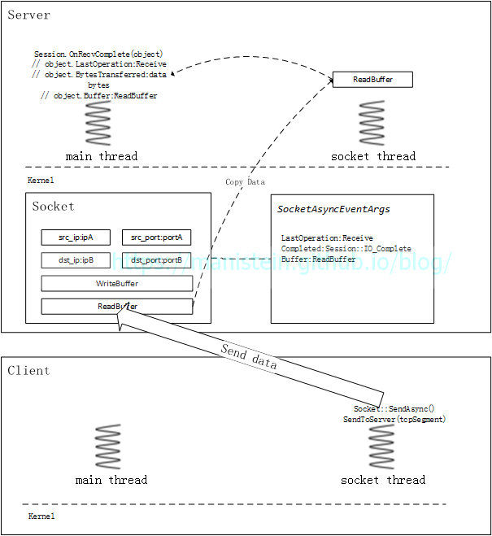
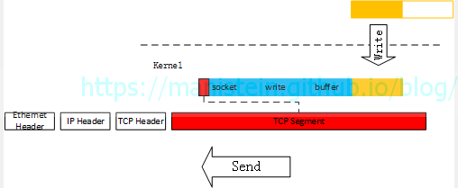
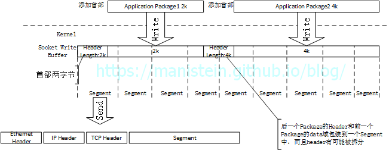

前言
在完成构建Lua解释器Part4以后，我原计划是将业余时间投入到Lua虚拟机的研究之中。不过最近，我们项目希望服务端和客户端共享战斗逻辑，功能由客户端实现，借以降低开发联调的成本，而客户端主要使用C#语言，在确定客户端能够做到表现和逻辑分离以后，我们决定服务端也搭建C#战斗集群来运行战斗逻辑。
在了解了几个开源的C#服务端框架后，由于没有找到合适我们项目，恰到好处的框架，于是我决定自己写一套。自己写的原因，并非看不上目前网络上能搜索到的开源C#服务端框架，而是我们的业务需求非常简单，只需要能够接收skynet集群发送的请求，并返回处理结果即可，因此我希望这套架构也尽可能简单，加之我以前就写了一些相关的代码，因此短时间内搭建一个简单的C#服务端框架也不是一件特别困难的事情。于是我花费了3周时间重新梳理和整合了这个模块。我认为分享是一种良好的品质，知识和货币一样，如果不流通，就没有任何价值，因此我决定将其开源，并附上一篇解析的Blog。一方面能够供别人参考，一方面也备着以供自己日后查看。由于本人水平有限，如有写的不对的地方，欢迎大家给我提建议，大家可以加Q群185017593找到我，我是群主，欢迎大家的到来。仓库地址在这里，欢迎star。
整体架构设计
我的这套C#服务端框架，采用的时TCP协议来进行通信，后文的论述默认是基于TCP协议进行的。我们先从最简单的模型作为讨论的起点，进程级别的交互流程，如图1所示，我们的战斗请求由skynet节点发起，skynet进程向C#服务进程发送请求，C#服务进程接收到请求以后，会将消息转给进程内对应的服务，并调用callback函数，处理完逻辑以后，将response数据包返回给skynet节点（我们的战斗是将双方的输入数据传给战斗节点，战斗节点一次完成计算，战斗运算期间，中间不会有任何交互，直接得到结果，类似王国纪元的世界战斗，最终得到战斗结果，并生成一份可以回放的战报数据）。
图1
从上述模型，我们可以了解到，我们的C#节点在接收到请求以后，并没有向其他进程继续发起请求，而是直接由自己处理逻辑然后返回结果，因此，这套C#服务端架构，暂时并不需要实现RPC调用机制，我只需要实现最基础的网络处理和消息调度即可，问题变得简单起来，后面我也可能会加入RPC机制，但目前来说这不是必要的，而且即便不囊括这个部分，我们要讨论的内容也并不轻松，所谓“简单”也只是相对而言。
知识延伸：集群和分布式系统的区别[1]
集群，一般指一类业务，开多个进程同时运行，每个进程都做同样的事情，可以视为一个节点的多个副本实例；一个集群一般有一个负载均衡节点，用来将请求平均分配到不同的集群节点中；集群内一个节点跪了，不会影响到该业务的处理，负载均衡服务器会将请求发到其他的集群节点中。
分布式系统，一般指处理的一类业务，被分成多个模块，而不同的模块又被分在不同的进程中运行，一个业务的处理，需要不同的节点协同运作；分布式系统不但提升了服务器的并发处理能力，还减少了数据库的连接，以及更好的对业务进行拆分组合，甚至做到多个项目共享一部分模块；分布式系统一旦一个节点跪了，可能会使整个系统无法正常运转。分布式系统中可以包含集群，但是集群不必是分布式系统。
前面我介绍了进程层面的交互，现在我要对C#服务进程的基本运作机制，作简要的概述，如图2所示，服务进程的线程主要包括几类，system socket线程池、主线程和worker线程。其中socket线程池是由系统自行管理，由于我们采用的是真正的异步IO，因此当IO事件触发时，首先会在socket线程里调用IO响应函数，而我们最终希望IO事件能够在主线程执行，因此要把需要在主线程执行的函数地址，包含到一个函数对象（C#的Action类实例）中，并将其放入一个加锁队列，主线程不断从事件队列中，pop出函数对象并执行，并以此不断处理IO事件（accept、write、read、disconnect , etc）。当主线程执行的是read事件，并且数据包收齐时，会将数据包转换成Message格式，并插入目标服务的消息队列中。当服务有消息的时候，服务id会被放入一个GlobalMQ的队列中，worker线程会不断从GlobalMQ队列中Pop服务id出来，并根据id去查找对应的服务实例，最终调用该实例的callback函数。服务的callback函数，会从服务自身的消息队列中pop出一个消息，并执行。如果请求者是RPC调用，那么服务的callback函数会将结果序列化成NetworkPacket，并放入NetworkPacket的队列中，主线程会不断从NetworkPacket队列中Pop数据包出来，并交给socket线程发送。
图2
上述内容，对C#服务端框架做了简要概述，我将在后续章节详细展开讨论涉及到的不同模块。
接下来我将介绍本项目的目录组织，这个C#服务端框架被分为3个模块，首先最主要的则是网络库，所有网络库相关的逻辑都包含在Network目录下，而Example目录则包含了网络库相关的使用测试用例，Game目录则包含了符合上面讨论需要的消息调度框架，我们自定义的服务将被放置在这个目录下，目录组织如图3所示，后续我将对每个大的模块进行详细讨论。
图3
网络库设计与实现
一个简单的情景
在开始讨论C#服务端网络库的设计与实现之前，我们先来讨论一种情景，现在我们有一台服务器，要求能够同时接受多个客户端的连接请求，和消息请求，收到消息后立刻返回给客户端，其情景模型如图4所示：
图4
我们希望这个echo server能够同时接受多个客户端的连接请求，信息请求，以及同时向多个客户端返回他们发的请求，为了实现这样一个服务端，我们有几种选择。首先我们要了解几种IO模型，他们分别是阻塞IO、非阻塞IO、多路复用IO、信号量和异步IO[2]这几种，本文不打算讨论信号量，因此不讨论这种IO模型，而异步IO则押后再进行讨论。
如果我们采用阻塞IO模型，来设计我们的echo服务端，那么我们将遇到一个问题，就是如果我们只用一条线程，那么我们的acceptor会阻塞线程，read和write也会阻塞线程，如果而一个socket阻塞线程的时候，其他socket可能又有信息过来，这样这个阻塞住线程的socket对应的客户端不发送信息给服务端的话，将会影响到服务器接受来自其他客户端的数据包。这样我们就无法实现高并发的服务端框架了，甚至可以说这种设计本身自带bug，无法在实战中使用。
而如果我们使用非阻塞IO来实现我们的服务端，那么其伪代码可能如下所示：
// in socket thread
while (true)
{
int new_fd = accept(listen_fd); // non-block
if (new_fd == -1)
{
switch(error)
{
case EAGAIN:
case EWOULDBLOCK:
{
// I/O not ready
} break;
case default:
{
// do error handle
}
}
}
else
{
// new socket, push new_fd to fd_list
}
for fd in fd_list
{
int read_num = read(fd, buffer, size); // non-block
if (read_num == -1)
{
// error process
}
else
{
// process read buffer
}
}
// sleep(1)
}虽然这种方式，一定程度缓解了上一种情况列举的问题，但是这也意味着线程需要不断主动去轮询，IO是否准备好，是否有数据可读，是否可写入数据，如伪代码所示的这种情况，因为持续不断的轮询，cpu占比也会非常高，如果没有任何IO事件触发，那么大量的资源浪费在了毫无意义的轮询上。面对这种方式，最简单的做法就是让线程sleep一个极小的时间段，比如1毫秒，但是这样又引入另外一个问题，当有海量客户端向服务器发送请求时，接收缓存可能在sleep的间隔内就已经塞满，这样客户端就不能发新的数据包过来(TCP流量控制)，导致服务器吞吐量下降。
还有一种方式则是，用一条线程，专门处理accept的情况(阻塞模式)，当有新的连接到来时，则为该连接创建一条新的线程，而该连接的读写事件都在新起的线程内执行，这种方式的问题在于，多有少个连接，就有多少条线程，连接多了，系统用在线程间的上下文切换的开销也越多，当有海量的连接时，性能会被这种系统级别的调度拖垮。
通过上面的讨论，我们得出一个高并发的服务器，至少要满足以下几个条件：
- 处理IO事件的线程要尽可能少，或者说要恰到好处，避免因为线程过多导致系统调度的开销攀升
- 我们希望真正有IO事件到来时，再通知socket线程处理
- 我们希望在同一条线程内，处理多个客户端，多个种类的请求(accept, read, write, disconnect etc)
面对这种情况，Linux操作系统实现其实有提供Demultiplexer(多路信号分配器)给我们使用，如select、poll和epoll等，他们的作用是，将调用这些函数的socket线程投入睡眠，直至有IO事件触发，然后返回包含IO事件的socket实例列表，和事件信息，我们再根据这个列表再进行read和write等操作。Demultiplexer的应用，使得我们侦测IO事件的效率大为增加，但是我们的网络库要怎么去利用这种机制呢？下一节我将展开讨论。
Reactor模型
Reactor模式，为我们提供了高并发网络架构的一种设计和实现方案，它的重要组成包括[3]：
- 用于识别socket实例的file describer
- 多路信号分配器(Demultiplexer)
- 统一事件派发器(InitiationDispatcher)
- 事件处理函数(Event Hanlder)
file describer实质上是指向指定socket实例的key，这样我们就可以通过这些key得到哪些socket触发了哪些IO事件；Demultiplexer是指selet、poll或者epoll这样的IO侦测机制；InitiationDispatcher则是负责调用Demultiplexer，以及获得事件响应以后，对事件进行派发的模块；Event Hanlder则是针对具体的事件，进行逻辑处理，如accept，read，write或disconnect等。图5和图6分别展示了，以select为Demultiplexer，分别展示了它处理Inbound事件和Outbound事件的流程。
图5
图6
通过上面两张图，我们可以清晰的看到InitiationDispatcher其实是个不断循环调用select的模块，当调用Select函数时，如果没有IO事件，那么socket线程将被投入睡眠，对cpu 0消耗。而当有IO事件到来时，select会返回不同的IO事件的fd列表，InitiationDispatcher拿到列表后，就会对该列表进行遍历，并逐个调用Event Handler处理不同socket实例的IO事件(read、write等)。这种有IO事件就通知socket线程，让socket线程自己获取信息的模式，被我们称之为Reactor模型。
虽然，我们的例子使用了select函数作为Demultiplexer，实际上，在实际开发中，我们用的更多的则是epoll，相比于epoll，select有几个劣势，包括：
- 能够侦测的fd数量有上限，而这个值通常是1024，这个值是定义在内核源码中的，需要修改源码并重新编译os内核才能改变上限值[4]
- 当IO事件触发时，需要对fd列表内所有的fd进行测试，检测其是否真的有事件，最极端的情况下，如果只有一个fd有IO事件到来，并唤醒了select，那么余下的fd检测都属于浪费性能的行为（应用进程无法知道socket的IO状态，只能去kernel中查询，这样会造成调度上的消耗）
相比而言，epoll则没有这些劣势，首先epoll可以不受限制得添加想要被侦测的socket实例，其次是当有IO事件到来时，只返回有IO事件的fd，因此不需要再进行IO检测，极大提高了性能。当然epoll的细节不止这些，如果想深入了解，可以查阅这些文献[5]：
Proactor模型
和Reactor模型不同，Proactor模型是真正的异步IO，Reactor的Demultiexer只是侦测IO事件，再把有IO事件的socket list返回给应用层的socket线程，对于read事件，仍需要应用层主动去将kernel中的数据包拷贝到应用进程的内存中，对于write事件，则需要将数据包从应用进程的内存中拷贝到kernel中。而Proactor模型，当IO事件触发时，它会将数据包从kernel拷贝到应用进程的内存后，再通知应用进程，此时应用进程则不需要再去进行这些操作。不过应用进程需要在一开始就指定进程内哪一块内存交给系统去进行读写，当读写事件完成事，系统会将对应的socket地址和之前交出去的内存地址返回，让应用进程作进一步处理。
图7
图7的逻辑在开始阶段做了以下几件事情：
- 向系统注册异步accept事件，当有新的连接过来时，将调用OnAcceptComplete函数，并将新创建的socket的new_fd带回来
- 向系统注册一个socket的异步read事件，并告知系统，如果该socket有数据包过来，就写入rbuffer并通知socket线程(调用OnReadComplete函数)
- 将一个socket的wbuffer的缓存，交给系统去写，并且当系统完成一次写操作时，则通知socket线程写了多少(调用OnWriteComplete函数)
Reactor VS Proactor
从定义上看，阻塞IO、非阻塞IO、复用IO和信号量均是同步IO，因为他们在最后阶段，都需要调用系统api(如read、write等)，将数据包从内核拷贝到应用进程中，而调用这些api是同步的方式进行的，也就是说调用过程会阻塞调用者，直至调用结束[6]。而Proactor之所以是异步IO，是因为它没有这个过程，他的读写都交给内核进行了，应用进程需要做的，则是处理好这些通知事件带回来的信息，理论上来说，Proactor因为读写操作交给了内核来处理，所以会比Reactor更简单一些，但是Proactor需要注意回调函数的调用可能是在其他线程中执行，因此需要非常注意线程安全问题。我写的这个C#服务端，是使用Proactor模式，后面我会更为详细地对此展开讨论。
这里还需要解释的一个问题是，为什么发送数据包的时候，要将数据包从应用进程内存拷贝到内核缓存中，而接收数据又要从内核缓存拷贝到应用进程中呢？原因是，我们的socket实例，实际上是由内核进行管理的，对于通过socket进行通信的发送方和接收方而言，每个socket实例均有一个发送缓存和接收缓存，我们要发送的数据包只有写入发送缓存，才能够使用内核的通信协议去发送数据包，而接收到的数据包，首先也会被放入接收缓存中，因此我们所指的内核缓存，实际上是指不同socket独有的发送缓存和接收缓存。我们可以在/proc/sys/net/ipv4/tcp_rmem和/proc/sys/net/ipv4/tcp_wmem两个文件中查找接收缓存和发送缓存的信息，里面会得到3个数值，分别是最小缓存大小，默认缓存大小和最大缓存大小，如我的云服务器的接收缓存信息和发送缓存信息如下所示(单位byte)：
1 tcp_rmem
4096 87380 6270880
1 tcp_wmem
4096 16384 4194304C#服务端网络库设计与实现
1.类设计与说明
在完成Reactor和Proactor两种模式的介绍和对比以后，现在我们回到C#服务端网络框架设计的讨论上。我们的网络库是采用Proactor模型，首先我们来看看网络库的类设计：
图8
图8展示了网络库的类关系图，现在分别对每个类进行解释：
- TCPServer类：TCP服务端处理类，它的功能包括创建监听用的socket，负责注册业务层传入的各种回调函数（如读写完成后的回调函数），并且管理Session实例
- TCPClient：TCP客户端处理类，它的功能包括注册业务层传入的各种回调函数，管理Session类实例，TCPClient类实例主动连接服务端时，会创建一个连接用的Session实例
- Session类：具体负责连接管理，数据包收发处理，错误接收并抛给业务层的类，我们会为每个连接创建一个Session实例
- InboundPacketManager类：处理接收到的数据包，在应用层的数据包收齐后，会通过回调函数通知业务层
- OutboundPacketManager类：处理发送的数据包，在应用层的数据包发完以后，会从buffer队列中取出下一个buffer，让socket发送
- TCPSynchronizeContext类：我们的IO响应函数，首先会在socket线程内调用，这个类是个单例，内部有个函数对象（Action实例）的加锁队列，IO响应函数会将想调用的函数包装成函数对象，并且插入这个队列中，运行在主线程的TCPServer或TCPClient实例会不断从这个加锁队列中，pop出函数队列，并且执行，这样做的目的是所有的IO处理都在主线程上执行，从而降低整体设计的复杂度
- BufferPool类：buffer队列缓存管理，BufferPool实例是唯一的，每个buffer 4k大小，用于存放收到或写入的数据包，当数据包收齐或写入完成时，Session实例会将buffer还给BufferPool，从而做到内存的循环利用
上面我对网络库主要的类组件，进行了简要的概述，后续内容将详细展开解释和说明，这里还需要说明的是，我们的TCPServer类和TCPClient实例，内部均有一个map成员，用来存放Session实例，它的key是当Session实例创建时，我们会为每个实例生成一个唯一id，而value就是Session实例的索引。
2.连接流程
现在我们来探索一下连接处理机制，首先我们的进程启动时，会创建一条主线程，并且运行我们的main函数。而在main函数执行的过程中，我们的服务端将创建TCPServer类实例，并完成初始化操作，而我们的客户端将创建TCPClient类实例，并启动连接处理。整个流程可以通过图9显示：
 图9
图9
根据图9我们可以了解到，不论是客户端还是服务器，均是在主线程创建网络处理模块的实例，而socket thread则是由系统api代为创建，实际上socket thread不止一条，这里为了描述方便，只画一条。图中，左边展示了服务器的网络部件初始化流程，而右边则展示了客户端连接服务器的流程，我们先来看看服务器网络部件创建和初始化的步骤：
- 创建TCPServer实例tcpServer
- Bind步骤：服务端创建一个socket实例m_listener，将其绑定到指定的ip和端口上
- Listen步骤：使m_listener成为监听的端口，并指定backlog的大小
- BeginAccept步骤：告知system socket模块，m_listener开始监听并能够异步接收Accept事件，并传入一个SocketAsyncEventArgs类型的实例object，当有新的连接到来时，将新创建的socket实例赋值到object.AcceptSocket上，并通知main thread有新的Accept事件
- 此时main thread开始处理其他事情，main thread不会被阻塞
图9的第1步骤到2.4步骤展示了这个流程，这个过程都很好理解，2.4步相当于向系统注册了一个Accept事件，当有新的连接创建时，系统会通知在main thread运行的tcpServer实例，后面会详细论述这个流程。服务器完成初始化以后，就会等待客户端连接，现在我们来展示一下，当客户端连接服务器时发生了哪些步骤：
- Client：客户端创建一个TCPClient实例tcpClient
- Client：tcpClient调用Connect函数，在此时创建一个Session实例，Session实例内部创建一个socket实例，并且向socket模块注册一个异步连接事件，tcpClient将Session实例添加到自己的map中，以备后续查找和使用。之后，main thread开始处理其他事情，main thread不会发生阻塞。客户端的socket thread则开始尝试连接服务器
- Server：在连接完成以后，服务器socket线程，会调用tcpServer实例的IO_Complete函数，这个函数是在socket thread上调用的，为了让连接处理在main thread上执行，这里将SocketAsyncEventArgs实例object和tcpServer.OnAcceptComplete函数包装到一个Action实例中，并放入一个加锁的Action队列中。main thread会不断轮询，不断从Action队列中pop出Action实例并执行，此时会在main thread上调用tcpServer.OnAccpetComplete函数
- Server：如图9的5.2.1.1.1.1步骤所示，tcpServer.OnAcceptComplete函数被调用时，会传回2.4步骤传入AcceptAsync的参数（即object），接着tcpServer会创建一个绑定object.AcceptSocket实例的Session对象，该Session对象会在这个阶段，向socket模块注册一个异步接收的事件，即如5.2.1.1.1.1.1.2.1.1步骤所示的那样，告知系统，有数据包过来，就将其写入rbuf所指向的地址中，其中开始位置为rbuf+roffset，最多写入maxbytes字节，写完再通知main thread
- Server：tcpServer将新创建的Session对象加入自己的Session map中，以便日后查找和使用方便
- Server：在上面几个步骤都完成了以后，tcpServer则再次向socket模块注册Accept监听事件，等待下一个客户端的连接请求
上面论述，阐述了C#服务端网络库初始化和建立连接的主要流程，不过这里还需要强调几点。首先要强调的点是，IO回调事件是需要应用层指定的，在这里，是由我写的网络库指定IO_Complete作为IO事件触发时的统一的回调函数，而这个回调函数是在socket thread上调用的，为了保证线程安全，我们需要把真正处理IO事件的函数，交回给main thread去执行(比如我们的Accept事件)。为了更加清晰地论述，除了图9的时序图，我还添加了图10和图11用于归纳和总结上述流程：
图10
图11
图10和图11都展示了socket的四元组，这是TCP协议中，我们用来识别不同socket的重要参数，也就说当接收到一个对端发送的数据包时，我们通过source ip、source port、destination ip和destination port来决定将数据包放入哪个socket的接收缓存中[7]。此外，每个socket都有和自己关联的SocketAsyncEventArgs类的object变量，这是socket thread带回信息给main thread的重要载体。
总而言之，首先响应IO事件的线程是socket thread，而当IO事件触发时，我们让socket thread调用统一通用的事件响应函数，它的作用则是在socket thread判定事件类别，并将对应的函数和参数包装到Action实例中，最后交给main thread去执行具体的IO响应函数。具体的操作是怎样的呢？我们可以看一下在socket thread里调用的IO_Complete函数是怎么定义的：
public class TCPServer
{
...
// Call in socket thread
private void IO_Complete(object sender, object o)
{
SocketAsyncEventArgs asyncEventArgs = o as SocketAsyncEventArgs;
if (asyncEventArgs.LastOperation == SocketAsyncOperation.Accept)
{
TCPSynchronizeContext.GetInstance().Post(OnAccpetComplete, asyncEventArgs);
}
}
...
}从上述代码我们容易知道，object实例包含事件的类别，而当IO_Complete函数，则是将想让主线程调用的函数，Post到一个加锁队列中，而这个加锁又是在TCPSynchronizeContext这个单例中，我们现在来看看这个TCPSynchronizeContext类主要做的功能：
public class TCPSynchronizeContext : SynchronizationContext
{
private static TCPSynchronizeContext m_instance;
private int m_threadId = Thread.CurrentThread.ManagedThreadId;
private ConcurrentQueue<Action> m_concurrentQueue = new ConcurrentQueue<Action>();
private Action action;
...
public void Loop()
{
while (true)
{
if (m_concurrentQueue.TryDequeue(out action))
{
action();
}
else
{
break;
}
}
}
public override void Post(SendOrPostCallback callback, object state)
{
if (m_threadId == Thread.CurrentThread.ManagedThreadId)
{
callback(state);
}
else
{
m_concurrentQueue.Enqueue(() => { callback(state); });
}
}
}然后main thread的while循环里不断尝试pop action事件并执行：
// TCPServer.cs
public class TCPServer
...
public void Loop()
{
TCPSynchronizeContext.GetInstance().Loop();
}
...
}
// Server.cs
// Call in main thread
public void Run()
{
...
while (true)
{
m_tcpServer.Loop();
ProcessSendBuffer();
Thread.Sleep(1);
}
}到这里为止，一切都很清晰了，整体的逻辑则是，socket thread负责生产IO事件，而main thread负责消费IO事件，也就是说TCPSynchronizeContext的Loop函数是在main thread里调用执行的。
另外一个需要注意的点则是，向socket模块注册异步IO事件，只会被执行一次，如果想要循环使用，就得在事件处理完之前，再次注册，图9中的2.4步和5.2.1.1.1.1.5步则说明了这一点。
最后我想对backlog进行讨论，首先我们要搞清楚backlog到底是什么？比较准确的说法应当是未被accept的连接队列长度，实际上，对backlog的定义，不同的操作系统有着不同的定义，比如FreeBSD上对backlog的定义则是未完成3次握手的连接队列的长度，当该队列长度等于设定的最大值时，新的连接请求会被丢弃；而对于linux2.2以后的版本来说，backlog指的是已经完成tcp 3次握手，但是未被accept的队列长度，对于linux来说，当该队列长度达到backlog的时候，新的连接请求同样会被丢弃[8]，直至backlog小于设定的最大值。我们通过backlog来限制同时连接的数量。
3.数据包收发
在完成连接流程阐述以后，接下来就是进行数据包收发流程说明，在连接建立后，服务端和客户端均会创建一个Session对象，我们的数据包收发，均是由Session代为处理的。现在假设一种情景，客户端发送数据包，服务端接收，那么整个收发的整体流程则如图12所示：
图12
- 客户端要向服务端发送6k大小的数据包，调用session.Write函数 图13
- session.Write函数内部，调用发包处理模块m_outboundPacketMgr.ProcessBuffer函数，来对要发送的数据包进行处理，为了能够循环使用buffer缓存，降低GC频率，当发送端要发送数据包时，需要从BufferPool里Pop buffer出来，作为应用层的发送缓存，一个buffer是4kb，那么m_outboundPacketMgr.ProcessBuffer函数则会从BufferPool内申请两块buffer，并将数据拆分到两个buffer中 图14
- 客户端session向socket模块注册写事件，并将上一步处理的头一个buffer指定为应用层的write buffer，此时客户端main thread继续执行其他逻辑 图15
- socket thread将指给自己的buffer执行发送操作，能发多少发多少，完成发送后，通过Session::OnWriteComplete函数，告知客户端的main thread，写了多少个字节，如果没写完，继续注册异步SendAsync事件，执行写操作，如果写完则尝试找到下一个buffer(并将已写完的buffer还给BufferPool)，如果存在则执行上述同样的写操作 图16
图17 - 服务器收到数据包以后，会将数据包写入之前Socket::ReceiveAsync函数里注册的read buffer，并通过Session::OnRecvComplete函数处理接收到的数据包，服务端会将接收到的数据包交给m_inbountPacketMgr模块进行处理（主要是分包粘包处理），收齐应用层的数据包以后，该模块会将整个包抛回给业务层 图18
- 服务器处理好收包事件后，会再次向socket模块注册异步接收事件，以备能够接收到下一个数据包
上述内容，阐述了完整的发包收包流程，不过这里仍然需要提醒的是，首先应用层下发的数据包，会被拷贝到从BufferPool pop出来的buffer中，如果应用层的数据包大于4k(一个buffer的大小)，那么就要pop出足够多的buffer出来，并将应用层的数据包拆分到这些buffer中，这些buffer组成队列。我们指定buffer队列的head，作为异步发送缓存，socket模块在socket对象中的发送缓存可写时(如图17的情况)，则将数据包从buffer中拷贝到发送缓冲中，并告知main thread，该buffer写入了多少，main thread重新指定该buffer为异步写入的缓存，同时socket thread开始发送数据包。当head buffer写完以后，就从buffer队列中取出head，重复上述的操作。
4.应用层分包、粘包处理
虽然我们在上一小节，花了大篇幅论述了数据包收发的流程，但是到目前为止，我们仍然只是讨论了，socket模块收到数据包以后，将其传回给main thread由OnRecvComplete 处理数据包接收事件。我们需要注意的是Session::OnRecvComplete函数收到的未必是应用层发送的整包，由于我们使用的是TCP协议，我们应用层数据经过序列化以后，会将这个序列化好以后的字节流，写到socket的发送缓冲中，然后经由socket将这些数据包发送出去。我们来看一下实际的发送情况是怎样的：
 图19
图19
然而实际上，TCP并不会去关心业务层发送了什么，它只会将发送缓冲中的字节分成一段一段的segment，并加上各层协议的包头最后发送出去。
图20
这样则会导致一个问题，就是我们应用层下发的数据包，实际上是被分割后发送出去，因此接收方无法一次收到整个整包。
 图21
图21
除了TCP Segment会将应用层定义的数据包分段发送以外，还有另一种情况也会使得应用层数据包被截断，就是发送缓冲剩余空间无法容纳整个数据包的情况。
图22
为了解决这个问题，我们需要在应用层做处理，那我们如何做到将被分成一个又一个的Segment在应用层重新组装呢？我们需要在应用层添加额外的信息，即在应用层为要发送的数据包添加表示长度的首部，这个首部约定固定的字节(如两个字节)，由于TCP是流式传输协议，一个连接中首个收到的数据包，我们读出头部，就知道一个包有多大，收齐多少个字节后，再将整包转给业务模块。然后再读应用层下一个包的首部，如此循环往复就能将一个又一个的整包传给业务模块处理。
图23
在我们的C#服务端框架中，负责收发每个连接数据的Session类，组合了InboundPacketManager类实例，而InboundPacketManager类又有一个64k大小的应用层接收缓存，我们的Session在注册接收事件的时候，需要指定一个应用层缓存让socket模块写入接收到的数据包，而这个缓存就是InboundPacketManager提供的InboundBuffer(ReadBuffer)，当socket的接收缓存收到数据时，socket模块会在合适的时机，在socket线程将其读出，并写入ReadBuffer，然后通知主线程调用OnRecvComplete函数处理接收到的数据(如图18所示)。根据上面的论述，我们可以很轻易得得知，在调用OnRecvComplete时，我们拿到的很可能只是发送端应用层数据包的一小部分，也有可能是个整包，因此我们需要分情况处理：
- Session::OnRecvComplete函数收到的是一个完整的应用层数据包时，直接将数据包通过回调函数抛给业务层
- Session::OnRecvComplete函数收到的部分应用层数据包时，InboundPacketManager会将数据包缓存起来，缓存的方式是从BufferPool中Pop出足够多的buffer，将数据包从ReadBuffer中拷贝到这些buffer中。收齐数据包以后，再new一个内存块出来，将这些buffer拷贝到该内存块中，并通过回调函数抛给业务层
- Session::OnRecvComplete函数收到的是应用层数据包Header的部分字节，那么需要将这些被拆分的Header存起来，等收齐Header的字节后，再重组就能知道应用层数据包有多大了，然后就可以以此为依据，处理接下来接收到的数据包
到这里位置，关于C#服务端网络框架的分包粘包处理就算完成了，接下来将讨论其他流程。
知识延伸：TCP的Segment由什么决定？[9]
我们已经知道，在TCP协议中，每个socket都有自己的发送缓存和接收缓存，而缓冲中的数据包会被拆分成一个一个的segment，再发送出去，那么TCP的segment的最大大小MSS(Maximum Segment Size)是多大？是谁决定它的最大大小呢？答案是MTU，所谓的MTU是maximum transmission unit，最大传输单元。最大传输单元是由数据链路层决定的，当我们的IP层数据包大于MTU时，就会被拆分成多个IP数据包，以便能够通过路由器，这些被拆分的IP数据包，最终会在接收端重组[10]。然而这种方式会带来无谓的开销，最好的方式是让IP协议乃至TCP协议单次不要发超过MTU的数据包，以此来避免IP数据包被拆分(实际上，我们常用的TCP/IP协议族也是这么处理的)。因此MTU的大小会影响甚至决定MSS的大小，Etherne几乎是当今链路层使用最广的协议，Ethernet的单个数据帧最大大小是1500bytes，除去IP协议20字节首部和TCP协议20字节首部，那么MSS则是1460字节。
然而这里还引出另一个问题，为什么数据链路层需要设定MTU？
设想一种情形，假设我们的家庭网络有几台设备连接着同一台路由器，此时如果这些设备同时向路由器传输数据包会出现什么情况？因为我们的数据是一个bit接一个bit从我们的设备网卡，传输到路由器的，如果多台设备同时进行，那么路由器将无法区分发送过来的bit是哪台机器发送过来的，这种情况我们称之为碰撞[11]。为了解决这个问题，其中有一种广为使用的方法就是，在数据链路层，每次只能让一个数据帧完整通过，通过后再让下一个数据帧通过[12]。这样就解决了碰撞问题，路由器能够接收到一个完整的数据帧，也就能够判别数据包从哪里来要到哪里去。但是这样也带来了另一个问题，假如一个设备要发送的数据包特别大（比如几个G），那么这个设备势必会对其他设备使用网络造成严重影响，因此每个数据帧都必须要有一个最大长度，以使各个网络设备能够公平使用网络带宽资源。
5.事件回调
我们已经知道TCPServer类和TCPClient类由Session类组合，而Session类又是由InboundPacketManager和OutboundPacketManager类组合。Session实例由TCPServer或TCPClient管理，并且Session实例主要负责数据包收发。上一节中，我们已经了解到，对端应用层发送的数据包，如果没收齐，会从BufferPool中Pop出足够数量的buffer用于临时存放这些数据包，当收齐以后，会通过回调函数抛给业务层模块，然后再将buffer还给BufferPool。本节我们需要探讨的则是，这个回调函数究竟是什么，他是怎么注册进来的。我们首先来看看服务端启动时，创建TCPServer类实例以后，做了哪些事情：
// TCPServer.cs
public delegate void SessionErrorHandle(long sessionId, int errorCode, string errorText);
public delegate void ReadCompleteHandle(long sessionId, byte[] bytes, int packetSize);
public delegate void AcceptHandle(long sessionId, string ip, int port);
...
// Server.cs
class Server
{
...
private TCPServer m_tcpServer;
private TCPClient m_tcpClient;
...
public void Run()
{
m_tcpServer = new TCPServer();
m_tcpServer.Start("192.168.210.104", 8888, 30,
OnSessionError, OnReadPacketComplete, OnAcceptComplete);
...
}
...
private void OnSessionError(long sessionId, int errorCode, string errorText)
{
LoggerHelper.Info(m_loggerId, 0, sessionId, String.Format(
"session error: sessionId:{0} errorCode:{1} errorText:{2}",
sessionId,
errorCode,
errorText));
}
private void OnReadPacketComplete(long sessionId, byte[] buffer, int packetSize)
{
...
}
private void OnAcceptComplete(long sessionId, string ip, int port)
{
LoggerHelper.Info(m_loggerId, 0, sessionId, String.Format(
"session accepted: sessionId:{0} ip:{1} port:{2}",
sessionId,
ip,
port));
}
}我们可以看到，在创建好TCPServer实例以后，会为tcpServer指定ip、端口以及3个回调函数，OnSessionError、OnReadPacketComplete和OnAcceptComplete，那么这些注册好的回调函数又是保存在哪里呢？我们接下来看一下TCPServer是怎么处理的：
namespace BattleServer.Network
{
public delegate void SessionErrorHandle(long sessionId, int errorCode, string errorText);
public delegate void ReadCompleteHandle(long sessionId, byte[] bytes, int packetSize);
public delegate void AcceptHandle(long sessionId, string ip, int port);
public class TCPServer
{
...
// event handler
private SessionErrorHandle m_onErrorHandle;
private ReadCompleteHandle m_onReadCompleteHandle;
private AcceptHandle m_onAcceptHandle;
...
public void Start(string serverIP,
int port,
int backlog,
SessionErrorHandle errorCallback,
ReadCompleteHandle readCallback,
AcceptHandle acceptCallback)
{
// we should init TCPSynchronizeContext in the TCP thread first
TCPSynchronizeContext.GetInstance();
IPEndPoint ipEndPoint = new IPEndPoint(IPAddress.Parse(serverIP), port);
m_listener = new Socket(AddressFamily.InterNetwork, SocketType.Stream, ProtocolType.Tcp);
m_listener.Bind(ipEndPoint);
m_listener.Listen(backlog);
m_acceptEvent.Completed += IO_Complete;
m_onErrorHandle = errorCallback;
m_onReadCompleteHandle = readCallback;
m_onAcceptHandle = acceptCallback;
m_bindIP = serverIP;
m_bindPort = port;
BeginAccept();
}
...
}
}我们可以看到，在BattleServer.Network的名字空间中定义了3个delegate类型，而在TCPServer中，则分别为这些delegate类定义了3个对应的回调函数变量，从外部注册的函数将会被赋值到这些delegate中，当delegate被调用时，就等于调用了外部传入的函数，这种设计给了我们使用网络库很大的便利性，外部可以采取非侵入式的手段定义自己的事件处理函数，并且通过接口约束我们的交互行为，使使用更加统一，比如当TCPServer接收到Accept事件时，需要将该相关的信息抛给业务层，其方式如下所示：
public class TCPServer
{
...
private void OnAccpetComplete(object o)
{
SocketAsyncEventArgs args = o as SocketAsyncEventArgs;
if (args.SocketError == SocketError.Success)
{
Socket socket = args.AcceptSocket;
try
{
Session session = new Session();
IPEndPoint remoteEndPoint = socket.RemoteEndPoint as IPEndPoint;
UserToken userToken = new UserToken();
userToken.IP = remoteEndPoint.Address.ToString();
userToken.Port = remoteEndPoint.Port;
m_totalSessionId++;
session.StartAsServer(socket, m_totalSessionId, m_bufferPool,
OnSessionError, m_onReadCompleteHandle, userToken);
m_sessionDict.Add(m_totalSessionId, session);
m_onAcceptHandle(m_totalSessionId, userToken.IP, userToken.Port);
}
catch(Exception e)
{
m_onErrorHandle(0, 0, e.ToString());
}
}
else
{
m_onErrorHandle(0, (int)args.SocketError, "");
}
BeginAccept();
}
...
}当Accpet成功时，TCPServer类会通过m_onAcceptHandle这个函数对象，将新建Session的id，ip地址和port信息抛给业务层，此时Server::OnAcceptComplete函数会被调用，Server.cs内部的逻辑就是业务层自定义逻辑。此外m_onReadHandle也会传入后续创建的Session实例中，以便他们收到事件时，能够抛给业务层。
6.错误处理
事实上，如果我们的Session在通信过程中遇到错误，会通过Session::OnRecvComplete函数带回错误消息：
class Session
{
...
private void OnRecvComplete(object o)
{
if (!m_isConnected)
{
return;
}
SocketAsyncEventArgs args = o as SocketAsyncEventArgs;
if (args.SocketError == SocketError.Success)
{
if (args.BytesTransferred == 0)
{
m_isConnected = false;
m_onSessionError(m_sessionId,
(int)SocketError.Disconnecting,
"Socket Disconnected:Receive 0 bytes");
}
else
{
m_inboundPacketManager.ProcessPacket(m_inboundPacketManager.InboundBuffer,
args.BytesTransferred);
}
BeginRecv();
}
else
{
m_isConnected = false;
m_onSessionError(m_sessionId, (int)args.SocketError, "");
}
}
...
}收到错误后，一般会直接通过回调函数抛给业务层，在我们的C#服务端架构中，会直接将收到的信息转发到日志服务，最后打印到文件中。这里需要注意的是，一旦错误触发，那么连接就会被关闭，客户端如果想继续通信，那么就得发起重连操作。
关于BytesTransferred为0的情况：
根据我实验的结果，如果强行关闭通信双方的一端，对端会直接收到10054也就是ConnectionReset的错误码。如果在程序中调用socket.Close()函数强制释放socket资源，对端也会收到ConnectionReset的错误码。这么做可能会导致已经写入socket发送缓存的数据包无法完成全部发送工作，为了预防这种情况，MSDN推荐我们在主动关闭socket时，先调用socket.Shutdown然后再调用socket.Close()释放socket资源[13]，而调用socket.Shutdown的时候，对端会收到0字节消息包。另外一种收到0字节数据包的情况是，发送端发送了0byte的数据，但是我们业务层不可能发送0个字节的数据包，因此当Session read到0个字节时，我们就需要关闭连接。写入的情况也类似。
尽管在关闭Session的时候，我有对socket先进行shutdown处理，但是这并不意味着，我们调用session.Write发送数据包的意图能够全部实现，因为当触发连接关闭时，在关闭时间后尝试写入socket发送缓存的数据包将会被丢弃。
7.性能优化
本节我们将讨论为什么发送和接收数据包要采用buffer pool的方式，以接收数据包为例，如果我们没有收到业务层的数据整包，我们就需要从buffer pool pop出足够数量的buffer，并将收到的数据包存入这些buffer中，收齐后再重新组合，并将数据包抛给业务层，然后再将buffer还给buffer pool。这样做的目的是为了为了尽最大可能做到内存复用。由于内存可以复用，不需要每次有数据包到达时重新new一块内存，这样就可以避免很多无谓的gc，从而提升的性能，这也是使用buffer pool的初衷。
8.小结
到这里为止，关于C#服务端框架的网络架构的论述就完全结束了，虽然我用了巨量的篇幅，讨论了很多细节，但是设计TCP协议的原理方面，并没有过多的涉足，这里我推荐大家阅读《Computer Networking A Top-Down Approach》一书，这本书对网络各层的论述之详细，令人折服。如果大家想要快速浏览运输层和网络层相关的知识，可以阅读我这两篇blog 《TCP/IP详解》运输层总结和数据包在网络层中的传输。
消息调度机制
我们回顾一下图2，它展示了我们C#服务端架构的消息调度机制，主要思想则是socket线程负责处理IO响应，再把具体处理IO的事件Post回主线程执行，如果是接收事件，主线程会进行分包粘包处理，并且在收齐包以后，将请求或回应发给指定服务的消息队列中，worker线程会在合适的时机，消费服务中的消息，也就是从服务的消息队列中Pop出消息，并执行callback函数，最终完成我们的业务。同样的，如果服务有消息要推送给远程节点，则先将消息写入一个加锁队列中，主线程会不断尝试从网络消息队列中Pop消息出来，并交给socket模块去发送。我们可以比较直观地感受到主线程，主要是负责处理输入消息和输出消息的中心线程。为了进一步加强我们对消息调度机制的理解，我们需要理解什么是消息，什么是服务，服务存在哪里，以及最终的消息调度方式。
消息的设计
首先我们要探讨什么是消息，消息可以是请求方发送的请求信息，也可以是被请求方返回给请求方的回应信息，其本质就是请求信息和回应信息的传输载体。由于消息代表的内容非常广泛，因此设计消息数据结构变成了重中之重，在我们的C#服务端架构中，消息数据结构的设计如下所示：
class Message
{
public int ProtoId { get; set; }
public byte[] Data { get; set; }
public int Source { get; set; }
public int Destination { get; set; }
public long ConnectionId { get; set; }
public int RPCSession { get; set; }
}这里我要强调的是，消息不等同于网络传输的数据包，事实上，我们收到整包以后，会将网络数据包转成服务进程内使用的消息，再推给指定的服务，让它去消费。实际上，消息可以分为两种，一种是其他进程通过socket传过来的给内部服务消费的消息，还有一种是进程内部，一个服务传给另一个服务的消息，前者我们把他称之为外部消息，后者则称之为内部消息。现在我们来对Message结构的每一个属性进行说明：
- ProtoId和Data：我们将节点内部，包含消息队列，和通过callback函数消费消息队列的实例（callback函数内部调用其他函数，解析消息，并执行逻辑），称之为服务，一个进程内部有多个服务，服务和服务之间的交互通过消息来进行，比如一个服务向另一个服务发送请求，或者是被请求的服务向请求服务发送返回结果，均是以消息为载体。不管是请求也好，回应也好，一个服务A需要指定另一个服务B，他所期待的行为，也就是说要服务A要发一个消息给服务B，告知服务B要去执行什么函数，并传入什么参数。服务B在完成处理后，也要发一个消息给服务A哪个函数去接收什么参数。也就是说，消息需要包含函数ID和参数信息，而为了让统一的方式去传输这两个信息，我们需要将函数ID和参数序列化成二进制字节流，这样也能够方便网络传输；我们的Data域，则是将函数ID和参数序列化的结果，ProtoId则指定了接收方通过什么协议去反序列化Data里的信息。
- Source：指定发送请求的服务，如果不是由服务发送则填0
- Destination：目标服务ID，被请求服务的ID
- ConnectionId：如果消息是外部消息，则需要记录他是通过哪个Session传入的，因此需要将SessionId记录在这个字段上，方便我们将回应消息传回给发送者
- RPCSession：发送者可能发起RPC请求，因此接受者返回消息时，需要将RPCSession信息带回给发送者，方便其找回对应请求的环境，并进行响应
到这里为止，关于消息的结构的介绍就结束了，接下来我们来看什么是服务。
服务的设计
服务是什么？服务的本质就是业务逻辑的执行实体，前面我已经介绍过，服务包含的最核心的部分如下所示：
- 消息队列
- callback函数
为了保证操作的原子性，这是一个入队、出队操作均要加锁的消息队列，使用的是spinlock。其他服务发送的请求，均会push到这个消息队列中。当worker线程空闲时，会从某个服务的消息队列中，pop出一个消息来，并交给callback函数消费。上一节我们介绍了消息的结构，callback函数在消费消息时，首先需要根据消息的ProtoId找到反序列化Data的方式，并调用指定的函数执行特定的业务逻辑。我们来看一下服务的定义：
class ServiceBase
{
private Queue<Message> m_messageQueue = new Queue<Message>();
private SpinLock m_spinlock = new SpinLock();
private bool m_isInGlobal = false;
protected int m_loggerId = 0;
protected int m_serviceId = 0;
public virtual void Init(int loggerId)
{
m_loggerId = loggerId;
}
public virtual void Callback(Message msg)
{
}
public Message Pop()
{
bool isLock = false;
Message result = null;
try
{
m_spinlock.Enter(ref isLock);
if (m_messageQueue.Count > 0)
{
result = m_messageQueue.Dequeue();
}
else
{
m_isInGlobal = false;
}
}
finally
{
if (isLock)
m_spinlock.Exit();
}
return result;
}
public void Push(Message msg)
{
bool isLock = false;
try
{
m_spinlock.Enter(ref isLock);
m_messageQueue.Enqueue(msg);
if (!m_isInGlobal)
{
GlobalMQ.GetInstance().Push(m_serviceId);
m_isInGlobal = true;
}
}
finally
{
if (isLock)
m_spinlock.Exit();
}
}
public void SetId(int id)
{
m_serviceId = id;
}
public int GetId()
{
return m_serviceId;
}
}这是我们所有服务的基类，如果我们想自定义自己的服务，则需要继承这个ServiceBase类，简而言之，我们的服务就是ServiceBase类或其派生类的实例。基类只提供了消息入队、出队操作，以及一个空的Callback函数，我们自定义的服务，需要重载这个Callback函数，我们服务真正的业务逻辑处理入口就是这个Callback函数。例如我们自定义了战斗服务，那么我们只需要处理好Callback函数即可。
class BattleTaskService : ServiceBase
{
public override void Init(int loggerId)
{
base.Init(loggerId);
}
public override void Callback(Message msg)
{
base.Callback(msg);
msg.Source = m_serviceId;
msg.Destination = m_loggerId;
LoggerHelper.Info(m_loggerId, m_serviceId, msg.ConnectionId,
String.Format("protoId:{0} data length:{1}", msg.ProtoId, msg.Data.Length));
if (msg.RPCSession > 0)
{
RPCHelper.RemoteSend(msg.ConnectionId, msg.ProtoId, msg.Data, msg.RPCSession);
}
}
}这个自定义的服务，做了很简单的处理，它重载了Init函数和Callback函数，Callback函数所做的事情也很简单，就是把收到的消息内容的长度写入日志，并将消息通过socket返回给发送者。实际上这是一个echo back的测试服务，他也展示了我们自定义一个服务需要怎样去做。
实际上，我们一个业务进程，可能会创建很多个服务，这样势必需要对服务进行管理，首先要解决的问题，则是我们新创建的服务，需要被放置在哪里？事实上，我设计一个ServiceSlots类，来存放这些已被创建的服务，ServiceSlots类是个单例，我们来看看ServiceSlots类包含的成员变量：
class ServiceSlots
{
private static ServiceSlots m_instance;
private static ReaderWriterLock rwlock = new ReaderWriterLock();
private ServiceBase[] m_slots;
private int m_handleIndex = 1;
private const int DefaultServiceSize = 8;
...
}实际上ServiceSlots的成员变量并不是很多，由于他是个单例，因此需要使用静态变量m_instance表示它自己，由于我们的C#服务端框架是多线程模型，因此可能存在多条线程同时对ServiceSlots内管理的服务进行Get或者Set的操作，因此这里加了读写锁，为什么加的是读写锁呢？因为我们通过ServiceSlots访问服务的频率远远大于创建新服务，并放入ServiceSlots的频率，因此使用读写锁能够极大提升效率。m_slots变量是我们存放服务的地方，他是一个一维数组，实际上他被作为hash表来使用，用于极大提升查询效率。m_handleIndex的作用，可以当做是为服务生成唯一ID的索引，最后是DefaultServiceSize则是m_slots默认的大小。接下来，我们来看看如何往ServiceSlots单例添加服务，ServiceSlots提供了一个Add函数，这个Add函数将已经创建好的服务，添加到m_slot数组中，我没有将ServiceSlots打造成服务工厂，原因是每个服务初始化传参可能都有所不同，我不希望ServiceSlot类包揽这些操作，业务的复杂度还是交给写业务自己去处理，这里只是将ServiceSlots定位为Service的容器，现在我们来看看我们如何将一个已经创建好的服务Add到hash表上的：
class ServiceSlots
{
...
public int Add(ServiceBase service)
{
if (service.GetId() > 0)
{
return service.GetId();
}
int result = 0;
try
{
rwlock.AcquireWriterLock(Timeout.InfiniteTimeSpan);
try
{
if (m_slots == null)
{
m_slots = new ServiceBase[DefaultServiceSize];
}
bool isFind = false;
int handle = m_handleIndex;
while (!isFind)
{
for (int i = 0; i < m_slots.Length; i++)
{
if (handle >= int.MaxValue)
{
handle = 1;
}
int hash = handle & (m_slots.Length - 1);
if (m_slots[hash] == null)
{
service.SetId(handle);
m_slots[hash] = service;
result = handle;
m_handleIndex = handle + 1;
isFind = true;
break;
}
handle++;
}
if (!isFind)
{
int oldSize = m_slots.Length;
int newSize = m_slots.Length * 2;
ServiceBase[] newSlots = new ServiceBase[newSize];
for (int i = 0; i < m_slots.Length; i ++)
{
ServiceBase slotService = m_slots[i];
int hash = slotService.GetId() & (newSize - 1);
newSlots[hash] = slotService;
}
m_slots = newSlots;
m_handleIndex = oldSize;
handle = m_handleIndex;
}
}
}
finally
{
rwlock.ReleaseWriterLock();
}
}
catch (ApplicationException e)
{
}
return result;
}
...
}添加服务到ServiceSlots容器的逻辑并不复杂，首先获得m_handleIndex的值，我们需要将这个值，映射到m_slots数组的slot上，由于m_handleIndex是不断递增的，所以它极有可能超过m_slots的大小，因此我们需要通过一种方式，让m_handleIndex的值映射到m_slots的有效范围内，方式就是这样一行代码
int hash = handle & (m_slots.Length - 1);如果m_slots[hash]为空，则说明这个坑可以占，那么服务实例将被赋值到这里，并且id值是m_handleIndex的当前值，如果m_slots[hash]不为空，那么让m_handleIndex的副本handle自增，通过同样的方式，去查找空闲的slot，如果找不到，那么m_slots扩大为原来的两倍，并且将旧数组中的实例拷贝到新的数组中(这里需要重新计算service id对应的slot位置)。这里需要注意的是，m_slots的Length始终是2的n次幂，为什么是要2的n次幂呢？因为2n-1得到的值，转成二进制以后，低位全是1，例如
| n的值 | 2n-1的十进制表示 | 2n-1的二进制表示 |
|---|---|---|
| 0 | 0 | 0000 0000 |
| 1 | 1 | 0000 0001 |
| 2 | 3 | 0000 0011 |
| 3 | 7 | 0000 0111 |
| 4 | 15 | 0000 1111 |
| 5 | 31 | 0001 1111 |
| … | … | … |
也就是说经过handle & (m_slots.Length - 1)的运算以后，最终的hash值一定会落在0~m_slots.Length-1的范围内。我们现在可以知道，当向ServiceSlots添加服务时，会为其分配一个唯一的服务id，而我们又可以通过这个服务id找到该服务在m_slots中的位置，我们来看看获取一个服务的操作是怎样的：
class ServiceSlots
{
...
public ServiceBase Get(int serviceId)
{
ServiceBase s = null;
try
{
rwlock.AcquireReaderLock(Timeout.InfiniteTimeSpan);
try
{
int hash = serviceId & (m_slots.Length - 1);
ServiceBase slot = m_slots[hash];
if (slot.GetId() == serviceId)
{
s = slot;
}
}
finally
{
rwlock.ReleaseReaderLock();
}
}
catch(ApplicationException e)
{
}
return s;
}
...
}获取操作也非常简单，它只是对service id进行一次hash运算，得到slot的位置，最后通过对比找到的service的id和传入的id判断是否是同一个服务，如果是则返回，否则返回null。通过这种方式，我们能够很快查询到想要查找的服务。
到这里为止，服务相关的内容就已经阐述完了，我们已经逐步逼近消息调度机制的环节了，接下来我们就来看看具体他是怎么运作的。
调度机制
在开始介绍真正的消息调度机制之前，我先介绍一下全局消息队列GlobalMQ，GlobalMQ也是一个单例，它的成员包括一个ConcurrentQueue，queue中存放着服务的id，并且不允许多个相同值的服务id同时在队列中，也就是说在队列中的服务id都是唯一的，GlobalMQ非常简单，它值提供Push和Pop操作，我们会注意到存放服务id的队列是ConcurrentQueue，它为我们保证了队列数据的线程安全，现在我们来看看GlobalMQ的定义：
class GlobalMQ
{
private static GlobalMQ m_instance;
private ConcurrentQueue<int> m_serviceQueue = new ConcurrentQueue<int>();
// We should call GetInstance first in main thread
public static GlobalMQ GetInstance()
{
if (m_instance == null)
{
m_instance = new GlobalMQ();
}
return m_instance;
}
public void Push(int serviceId)
{
m_serviceQueue.Enqueue(serviceId);
}
public int Pop()
{
int serviceId = 0;
if (!m_serviceQueue.TryDequeue(out serviceId))
{
return 0;
}
return serviceId;
}
}GlobalMQ默认是空的，当我们的服务首次被push消息的时候，该服务的id会被push到GlobalMQ中(service 的消息队列从空到非空时，才会触发这个逻辑，是为首次push，目的是为了保证GlobalMQ内每个服务id不会重，从而避免多条线程同时获取相同的service并执行callback函数导致线程安全)。我们C#服务端框架进程启动时，会创建若干条worker线程，当worker线程空闲时，会主动从GlobalMQ中pop出一个service id，并通过service id到ServiceSlots里查找对应的服务，接着从service中pop出一个消息，最后交给service的callback函数消费。在callback函数执行完时，该服务的service id会重新push到GlobalMQ中，以便下次再被调用。由于我们现在的机制，保证GlobalMQ中的service id不会出现重复值(即同一个service id不会被push两次)，因此他是线程安全的。消息调度的逻辑如下所示：
class Server
{
...
private void ThreadWorker()
{
while(true)
{
int serviceId = m_globalMQ.Pop();
if (serviceId == 0)
{
Thread.Sleep(1);
}
else
{
ServiceBase service = m_serviceSlots.Get(serviceId);
Message msg = service.Pop();
if (msg != null)
{
service.Callback(msg);
m_globalMQ.Push(service.GetId());
}
}
}
}
...
}我们可以看到，如果service的消息队列没有消息时，它不会执行callback函数，并且也不会将自己的service id再次push到GlobalMQ中，要再次执行，需要有其他service向自己push新的消息(消息队列再次从空转变为非空)时，将service id重新push到GlobalMQ中。这样做的目的是，希望没有消息的service，不会再参与GlobalMQ的入队出队操作造成性能开销，以及减少worker的轮询次数(当GlobalMQ为空时，worker将投入睡眠1ms)。 现在我们已经清楚了消息的调度机制了，而消息的来源又有那些呢？在C#服务端框架中，消息来源主要有两种，一种是主线程处理完整包以后，将数据包push给指定的服务，展示如下：
class Server
{
...
private void OnReadPacketComplete(long sessionId, byte[] buffer, int packetSize)
{
SkynetClusterRequest request = m_skynetPacketManager.UnpackSkynetRequest(buffer);
if (request == null)
{
return;
}
if (m_handleIndex >= m_battleTaskComsumers.Length)
{
m_handleIndex = 0;
}
int serviceId = m_battleTaskComsumers[m_handleIndex];
BattleTaskService battleTaskComsumer = (BattleTaskService)m_serviceSlots.Get(serviceId);
Message msg = new Message();
msg.ProtoId = request.ProtoId;
msg.Data = request.Data;
msg.RPCSession = request.Session;
msg.Source = 0;
msg.Destination = serviceId;
msg.ConnectionId = sessionId;
battleTaskComsumer.Push(msg);
m_handleIndex++;
}
...
}接收到的数据包，被转换成Message以后，push到指定的服务中，然后交给消息调度机制去消费。另一种则是来自本节点内的其他服务，向自己发送请求，例如我们写日志到日志服务：
// 其他服务在Callback函数中调用LoggerHelper.Info函数
class LoggerHelper
{
public static void Info(int loggerId, int source, long sessionId, string msg)
{
LoggerService logger = (LoggerService)ServiceSlots.GetInstance().Get(loggerId);
Message message = new Message();
message.Data = Encoding.ASCII.GetBytes(msg);
message.Destination = loggerId;
message.Source = source;
message.ConnectionId = sessionId;
logger.Push(message);
}
}写到这里，关于消息调度的相关内容，就全部介绍完毕了，我已经花费了巨量的篇幅阐述了网络库和内部服务的整体架构和运作机制，后面的章节，我将对skynet节点如何和C#服务端进行通信作简要说明。
处理skynet进程发送的请求
请求回应流程
正如图1所示的那样，我们的C#服务端框架主要任务是处理skynet进程发送的战斗计算请求，并将处理结果返回给skynet进程，为了实现这一点，首先我们需要对skynet的cluster集群机制有所了解，并且适度探讨其数据包的编码解码方式。我们的skynet集群组网机制采取cluster模式[14]。
当我们一个skynet节点起来时，会创建一个gate服务，这个gate服务会绑定一个ip和port，并且等待连接和要接收的数据包。同时创建gate服务的watchdog服务clusterd，clusterd服务的主要作用，主要有：
- 负责作为client连接集群内部的其他节点
- 将节点内部服务的消息，转成指定格式的数据包，通过socket发送出去
- 接收作为client发出请求的回应数据包，并转成内部消息格式，回传给发起请求的服务
现在我们假设skynet节点内，有个服务向C#战斗进程发送请求，那么会执行类似如下所示的代码：
1 local proxy = cluster.proxy("battlesvr", "battletask")
2 local result_index, response = skynet.call(proxy, "lua", proto_id, request)
3 print(response)battlesvr代表battle process，battletask代表battle process内的服务名称，代码中的request，是被序列化成字节流的请求数据，proto_id代表使用哪条协议，这里通过将请求转发给proxy服务，进而转给clusterd服务，最后clusterd通过socket向战斗节点发出请求，在请求返回前，调用skynet.call的协程会阻塞等待，当C#服务端处理完结果，并返回时，协程被唤醒，并将结果response返回，业务逻辑得以继续执行。接下来我们来看一下，整个请求回应会经历那些步骤，首先skynet集群节点在起来时，并不会立刻尝试向C#服务端进行连接，而是首次发起请求的时候，先进行连接，再发送请求。
图24
如图24所示，执行上面lua代码的skynet服务是src_ctx，它首先会向proxy服务发送请求，然后挂起请求协程，并消费其他消息(如果你不熟悉skynet，可以阅读我写的skynet源码赏析)，proxy会向clusterd服务转发请求，clusterd服务收到请求以后，首先会判断是否和battle process建立过连接，如果没有，则发起连接请求，连接battle process，在battle process收到收到连接请求后，会在socket线程调用TCPServer::IO_Complete函数，并且将处理连接的事件Post给主线程做，主线程收到Accept事件以后，会调用TCPServer::OnAcceptComplete函数，为此连接创建一个Session实例，往后这个连接的数据包收发处理都交给这个新创建的Session实例处理，在完成这个处理后，再将连接客户端的ip和port以及session信息抛给业务层，也就是Server::OnAcceptComplete函数(这个连接会一直保持，除非发生错误，后续请求会直接通过这个连接，向battle process发送)。在完成连接以后，clusterd服务就会battle process节点发送src_ctx服务发送的请求，于是进入第二个阶段，如图25所示：
图25
clusterd服务将src_ctx发送的请求，发给battle process，然后battle process收齐请求以后，则将请求数据包转成内部消息Message后，给指定的服务push，服务在完成请求处理以后，会将回应数据包push到NetworkPacket队列中，然后主线程会不断从该队列pop出数据包，并交给socket线程将结果返回给skynet请求节点。
图26
clusterd服务收到回应包以后，会将Response返回给proxy，进而返回给请求服务src_ctx，此时原先发起请求的协程被唤醒，执行第3行的逻辑。现在我们完成了skynet节点和C#战斗集群交互的流程。
skynet集群数据包的编码和解码
上一节，我们论述了skynet节点向C#战斗节点发送请求，并获得回应的流程，然而，在发出请求之前，skynet会对请求数据进行编码，收到回应以后，会对回应包进行解码。在我的应用场景中，请求一般由两个部分组成，一个是被协议序列化好的字节流request/response，它是一个字符串，还有一个是指明用哪个协议序列化和反序列化的proto_id，它是一个整型数值，我们所有的请求和回应都会被转成这种形式。当src_ctx服务向proxy服务发送请求的时候，会对proto_id和request进行一次pack(编码)操作，即将这两个数值以某种方式写入字节流中。proto_id是整型数值，skynet会根据具体值的范围，将其编码并写入字节流中。
* pack integer to buffer. value == 0
* +--------+
* + 1 byte +
* +--------+
* + 0|Type +
* +--------+
*
* pack integer to buffer. value != (int32)value
* +--------+----------------------------------------------------------------+
* + 1 byte + 8 bytes +
* +--------+----------------------------------------------------------------+
* + 6|Type + integer value +
* +--------+----------------------------------------------------------------+
*
* pack integer to buffer. value < 0
* +--------+--------------------------------+
* + 1 byte + 4 bytes +
* +--------+--------------------------------+
* + 4|Type + integer value +
* +--------+--------------------------------+
*
* pack integer to buffer. value < 0x100(256)
* +--------+--------+
* + 1 byte + 1 bytes+
* +--------+--------+
* + 1|Type + value +
* +--------+--------+
*
* pack integer to buffer. value < 0x10000(16k)
* +--------+----------------+
* + 1 byte + 2 bytes +
* +--------+----------------+
* + 2|Type + integer value +
* +--------+----------------+
*
* else
* +--------+--------------------------------+
* + 1 byte + 4 bytes +
* +--------+--------------------------------+
* + 4|Type + integer value +
* +--------+--------------------------------+
*/上面内容展示了不同值范围的整型数值的编码方式。接下来我们来看看string类型是怎么被编码的
* Skynet inner message packet format
* pack string to buffer, lua long string, (str bytes < 32 bytes)
* +--------+--------------------------------+
* + 1 byte + str len bytes +
* +--------+--------------------------------+
* +Len|Type+ str buf bytes +
* +--------+--------------------------------+
*
* pack string to buffer, lua long string, (32 bytes <= str bytes < 16k)
* +--------+----------------+--------------------------------+
* + 1 byte + 2 bytes + str len bytes +
* +--------+----------------+--------------------------------+
* + 2|Type + str len + str buf bytes +
* +--------+----------------+--------------------------------+
*
* pack string to buffer, lua long string, (str bytes >= 16k)
* +--------+--------------------------------+--------------------------------+
* + 1 byte + 4 bytes + str len bytes +
* +--------+--------------------------------+--------------------------------+
* + 4|Type + str len + str buf bytes +
* +--------+--------------------------------+--------------------------------+上面这些编码格式，是我查阅代码后整理出来的，我们可以看到，为了尽可能减少编码后，字节流的大小，不同长度的字符串会采用不同的编码方式。在对proto_id和request编码后，得到的字节流会被拼在一起，组成一个msg，src_ctx服务会将msg发给proxy服务，proxy服务又会将msg转发给clusterd服务。
clusterd服务在拿到msg以后，并不会立即向battle process发出请求，而是会进行进一步编码，当msg的尺寸<=32k时，clusterd服务会为其添加首部后，向battle process发送请求，其格式如下所示：
* Skynet cluster request packet formats
* Skynet cluster's normal packet(<= 32k) format
* +----------------+--------+--------+----------------+--------------------------------+--------------------------------+
* + 2 byte + 1byte + 1byte + name len bytes + 4 bytes + msg size +
* +----------------+--------+--------+----------------+--------------------------------+--------------------------------+
* + packet len +Tag:0x80+name len+ name bytes + session + msg bytes +
* +----------------+--------+--------+----------------+--------------------------------+--------------------------------+我们可以看到，头两个字节packet len代表整个数据包的长度，紧随其后的一个字节Tag代表他的类型0x80代表整个是一个完整的数据包，然后是一个1byte的name len，它代表被访问的服务名称的名字有多长，name bytes代表服务名字的内容，后续4个bytes是session的值(每个rpc请求都会生成唯一的session值，response返回时会带回这个session值，用来找回被挂起的协程并且唤醒它)，最后部分就是我们真实的请求信息，proto_id和request经过编码后的结合体。当我们的msg超过32k时，此时需要把数据包拆分成3个部分，首包、尾包和中间部分，msg将在应用层被拆分成多个部分发送出去。我们来看看他的组成：
* Skynet cluster's large packet(> 32k) format
* First FRAGMENT format
* +----------------+--------+--------+----------------+--------------------------------+--------------------------------+
* + 2 byte + 1byte + 1byte + name len bytes + 4 bytes + 4 byte +
* +----------------+--------+--------+----------------+--------------------------------+--------------------------------+
* + packet len +Tag:0x81+name len+ name bytes + session + msg size +
* +----------------+--------+--------+----------------+--------------------------------+--------------------------------+
*
* FRAGMENT format
* +----------------+--------+--------------------------------+--------------------------------+
* + 2 byte + 1byte + 4 bytes + msg size +
* +----------------+--------+--------------------------------+--------------------------------+
* + packet len + Tag:2 + session + msg buf bytes +
* +----------------+--------+--------------------------------+--------------------------------+
*
* Last FRAGMENT format
* +----------------+--------+--------------------------------+--------------------------------+
* + 2 byte + 1byte + 4 bytes + msg size +
* +----------------+--------+--------------------------------+--------------------------------+
* + packet len + Tag:3 + session + msg buf bytes +
* +----------------+--------+--------------------------------+--------------------------------+如上所示，最上部是首包，他的格式和不分包的情况类似，只是Tag的值为0x81，中间部分是中间包的格式，除了Tag值为2以外，它也少了服务名称要占用的字节，数据包的尾部和中间部分一致，只是Tag值为3。在完成编码以后，clusterd服务会将对应的数据包(未拆分的单包，或已经拆分的多个业务层数据包)发送给battle process，battle process会对业务层的分包进行重组，然后才抛给指定的服务供其消费，并返回结果。
回应包也一样会进行编码，只是格式上又有所不同，不过有所不同的是，回应包超过32k，会进行拆分，就是多了个包头：
* Skynet cluster response packet formats
* Large response packet (> 32k) format, Tag: MULTI_BEGIN
* +----------------+--------------------------------+--------+--------------------------------+
* + 2 byte + 4 bytes + 1byte + 4 bytes +
* +----------------+--------------------------------+--------+--------------------------------+
* + packet len + session + Tag + msg size +
* +----------------+--------------------------------+--------+--------------------------------+Tag值为MULTI_BEGIN，而其中间部分和结尾部分采用相同的结构，只是Tag值有所不同：
* Normal response packet (<= 32k) format, Tag: ERROR, OK, MULTI_PART, MULTI_END
* +----------------+--------------------------------+--------+--------------------------------+
* + 2 byte + 4 bytes + 1byte + msg size +
* +----------------+--------------------------------+--------+--------------------------------+
* + packet len + session + Tag + msg buf bytes +
* +----------------+--------------------------------+--------+--------------------------------+中间部分的Tag值为MULTI_PART，而结尾包的Tag值是MULTI_END。<32k的数据包和刚刚展示的那一段类似，只是Tag值为OK。skynet服务接收到回应包以后，也会根据上面的编码格式，进行解码，拿到正式的msg值，并进一步解码得到最终lua vm能够使用的数据结构。到现在为止，skynet的编码和解码方式就介绍完毕了。
总结
终于写到最后了，写到这一行，我已经花费了半个月的时间，对于我来说，写blog是个极其重度的活，我不仅要梳理和总结知识点，还需要查阅大量的资料，唯恐因为疏忽写错内容误导了他人。尽管我本人尽最大努力保证blog的准确性，但由于水平所限，有写的不对的地方还是希望大家一起讨论。
这篇blog，我讨论了网络库设计的常用的两种模式Reactor和Proactor，接着又介绍了C#服务端架构设计与实现，接着介绍了消息调度机制，最后介绍了和skynet集群的交互流程。涉及大量的细节，并试图探索究竟。作为春季攻势的一部分，我完成了基本的目标，后面我又可以将业余时间投入到lua解释器的研究上了。
Reference
[1] The difference between cluster and distributed
[2] [Unix网络编程 卷1 I/O复用 select和poll 6.2 I/O模型]
[3] Reactor An Object Behavioral Pattern for Demultiplexing and Dispatching Handles for Synchronous Events:7 Structure
[4] [Unix网络编程 卷1 6.3.2 select的最大描述符数]
[5] [The method to epolls madness]主要从一个易于理解的层面，阐述epoll的内部机制，而[Nonblocking I/O]则详细论述了epoll的lt和et两种模式。这两篇我是查阅质量最高的两篇文章，同属一个作者编写，ps:需要跨越障碍。
[6] [Unix网络编程 卷1 6.2.7 同步I/O和异步I/O对比]
[7] [Computer Networking A Top-Down Approach 6th: 3.2 Multiplexing and Demultiplexing]
[8] How TCP backlog works in Linux
[9] MTU and MSS: What You Need to Know
[10] [Computer Networking A Top-Down Appraoch 6th: 4.4 The Internet Protocol(IP):Forwarding and Addressing in the Internet]“Fragments need to be reassembled before they reach the transport layer at the destination.Indeed, both TCP and UDP are expecting to receive complete, unfragmented segments from the network layer. The designers of IPv4 felt that reassembling datagrams in the routers would introduce significant complication into the protocol and put a damper on router performance. (If you were a router, would you want to be reassembling fragments on top of everything else you had to do?) Sticking to the principle of keeping the network core simple, the designers of IPv4 decided to put the job of datagram reassembly in the end systems rather than in network routers.”
[11] see [the data link layer and local area network;section:Medium Access Control]“The common problem among all of these network organisations is how to efficiently share the access to the Local Area Network. If two devices send a frame at the same time, the two electrical, optical or radio signals that correspond to these frames will appear at the same time on the transmission medium and a receiver will not be able to decode either frame. Such simultaneous transmissions are called collisions. A collision may involve frames transmitted by two or more devices attached to the Local Area Network. Collisions are the main cause of errors in wired Local Area Networks”
[12] see [the data link layer and local area network;section:Medium Access Control]“All Local Area Network technologies rely on a Medium Access Control algorithm to regulate the transmissions to either minimise or avoid collisions. There are two broad families of Medium Access Control algorithms :
Deterministic or pessimistic MAC algorithms. These algorithms assume that collisions are a very severe problem and that they must be completely avoided. These algorithms ensure that at any time, at most one device is allowed to send a frame on the LAN. This is usually achieved by using a distributed protocol which elects one device that is allowed to transmit at each time. A deterministic MAC algorithm ensures that no collision will happen, but there is some overhead in regulating the transmission of all the devices attached to the LAN.Stochastic or optimistic MAC algorithms. These algorithms assume that collisions are part of the normal operation of a Local Area Network. They aim to minimise the number of collisions, but they do not try to avoid all collisions. Stochastic algorithms are usually easier to implement than deterministic ones.”
[13] Socket.Shutdown(SocketShutdown) Method
[14] Skynet Cluster